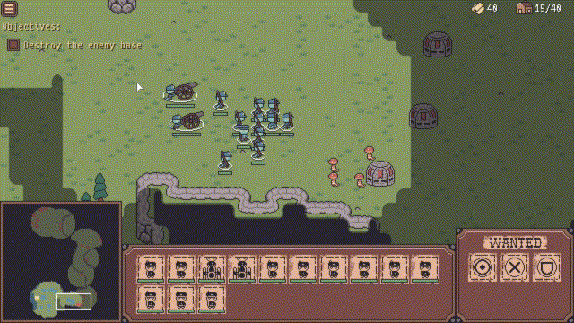
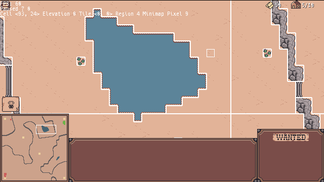
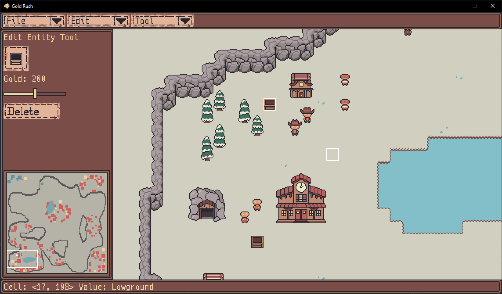

<< Back
Gold Rush
Gold Rush is a Wild West RTS game made in my own custom engine using C++ and OpenGL. The game began as an experiment in RTS game design and grew into a fully-fledged game project.
The game features LAN and online multiplayer, an AI opponent, a singleplayer campaign, a level editor which I used to create the campaign, and a replay mode where plays can rewatch their past matches. The game is also cross-play and cross-platform, and was released on Steam for Windows, Mac, and Linux.

Multiplayer - Deterministic Lockstep
Like many other RTS games, Gold Rush uses deterministic lockstep as its networking architecture. This is a peer-to-peer architecture which ensures that the game stays in-sync without relying on an authoratative server.
To ensure determinism, the game:
- Is architected so that the core simulation state (called the MatchState) is isolated from the rest of the game state
- Leverages the command pattern to ensure that the MatchState is only ever altered via MatchInputs which can be shared among players
- Only ever updates with a fixed-timestep
- Uses fixed-point numbers for sub-integer unit positions to avoid floating point non-determinism
- Uses a custom random-number generator to avoid differences in rand() implementation across platforms and compilers
Desync Debugging
Even with all these measures in place, desync bugs still occur. These bugs were the hardest to resolve in the entire project because they are difficult to reproduce and their root cause is difficult to track down. While naive print debugging got me through a few of them, I eventually needed to invest in better tooling.
Desync debugging starts by using checksums to identify when a desync has occurred. From there, clients will compare their serialized MatchStates field-by-field, eventually hitting a debug break on the first field that doesn't match. This technique allowed me to see exactly what field went out-of-sync and what the difference between the two fields was.
The final piece of this debugging strategy is reproducing the desync bug. To do this I setup a test mode through which the game's AI opponents can play matches against each other on repeat. With this in place, all I have to do is setup two laptops to play against each other in test mode and let them do their thing until they run into a desync bug.
Once the desync bugs are found, they are usually pretty easy to solve. Common culprits include uninitalized variables, improper MatchInput serialization, and improper usage of the custom random generator.
Performance Optimization
Many great optimization stories arose from this project, and this is the first project that required me to seriously profile and optimize my code, which was a great learning expeirence.
One performance issue had to do with the aforementioned checksums, which were taking up to 10ms to run even on an optimized build. To fix this, I reoganized the game's memory so that all of the MatchState data was contiguous in memory, and I swapped my checksum function (Adler32) with a SIMD version of the same algorithm. These changes combined brought the runtime of this function down to the hundreds of microseconds.
Another recurring performance issue was the pathfinding. The game uses grid-based A* pathfinding, which is a great algorithm, except it has the major problem of having O(n^2) runtime. Therefore most of my time on pathfinding was spent figuring out how to avoid that worst-case runtime.
One way I accomplished this was by identifying impossible paths before pathfinding even began. For example, if a player orders their unit to move into a lake, the game can tell straightaway that they will never find a path into the lake (because the requested cell is not walkable), so it first reverse-pathfinds from the requested cell to the nearest walkable cell, then uses that cell as the new target for pathfinding.
Another issue was that certain map geometries caused the A* heuristic to explore cells in all the wrong places. Usually this was caused by ordering a unit on the lowground to go to a nearby cell on the highground when the staircase to the highground is far away. Since the target cell is nearby, the heuristic led the pathfinder to explore cells nearby, not realizing that, in this particular situation, the unit actually needs to walk the long way around to get to the staircase, and only then could it reach the target highground cell.

The solution to this problem was to use Hierarchical Pathfinding A*. As you can see in the screenshot above, the map is divided into different pathfinding regions. Whenever a unit is ordered to move, the game first builds a high-level "region path" from the source to the destination. Then a detailed path is made, using the region path to create intermediary heuristics which guide the pathfinder to its goal.
Level Editor & Campaign

The level editor is powered by the game's UI library (an API I developed which mimics imgui's imperative design). It allows the user to shape the terrain and place decorations, units, and buildings.
The editor was designed with the command pattern so that all changes are performed using EditorAction objects which can be undone and redone as needed.
The editor is also implemented as a part of the game itself (though it is compiled-out in release builds). This allows for fast iteration times. Pressing F5 in the editor immediately places users into the level they are editing.
The game uses Lua scripting to facilitate level-specific behaviors and exposes a flexible API to the level scripts, allowing them to manage things like level objectives, camera pans, unit spawns, and win conditions. Additionally, since the game uses LuaJIT as its runtime, I was able to expose an FFI to the levels that allows them to query entity information efficiently.
The editor is tightly integrated with the level scripts. From within the editor, users can
specify one or more named constants. These constants could be cell locations or entity IDs,
and they have the advantage of being visually called-out in the editor. Then, when the level
begins, the game loads all these constants into a Lua table called scenario.constants, which
allows the level constants to be accessed by the level scripts.
Lastly, the campaign levels are saved as JSON files during editing, giving them an extensible and version-control friendly format. Then, during release builds, they are compiled into serialized binary files for efficient storage and load times.